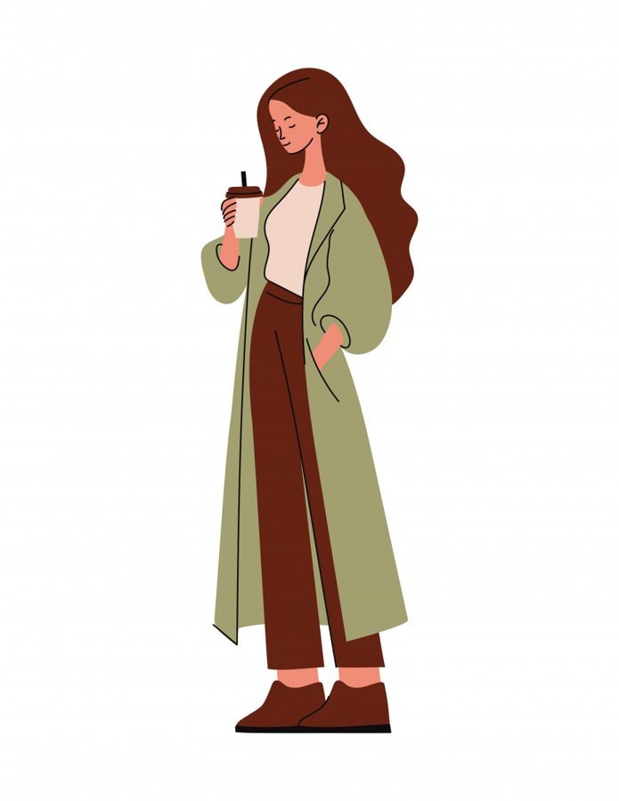

В последнее время я часто размышляю о том, как мы устроены. О наших привычках, сценариях, внутренних запретах. И о том, как всё это влияет на то, что мы имеем в итоге.
Хочу поделиться несколькими наблюдениями. Они про разное, но, как ни странно, связаны нашей способностью быть в контакте с собой.
Про прошлое, которое мы не можем изменить
Ко мне часто приходят клиенты с запросом: «Если бы я тогда поступил иначе, сейчас всё было бы по-другому».
Мы любим думать, что у нас был выбор. Что мы могли сказать иначе, сделать иначе, выбрать другого партнера, другую работу, другой путь.
Но правда в том, что ничего не бывает зря. Если вы что-то совершили в прошлом, значит, в тот конкретный момент вашей жизни в этом поступке был смысл. И если вам кажется, что вы могли поступить по-другому, знайте - вы не могли.
Тогда, с тем ресурсом, с тем состоянием, с тем опытом - это было единственно возможное решение. Даже если сейчас оно кажется ошибкой.
Это не про то, чтобы обесценить свой прошлый опыт, а чтобы перестать тратить энергию на самобичевание и направить её на то, что можно изменить прямо сейчас.
Про других, которые отнимают нашу энергию
Ещё один огромный потребитель нашей внутренней силы - это мысли о чужих поступках. «Почему он так поступил? Зачем она это сказала? Как они могли? Что они теперь обо мне подумают?»
Мы тратим часы, дни, годы на обдумывание и оценивание того, что делают другие люди. Мы прокручиваем диалоги, додумываем мотивы, обижаемся, злимся, пытаемся понять.
А правда в том, что чужие поступки - это их территория. И сколько бы мы ни думали, мы никогда не узнаем всей картины. И никогда не сможем за другого прожить его жизнь.
Предоставьте возможность людям жить своей жизнью. И это будет уважение к их пути и к своим границам. Когда вы перестаёте впускать в голову чужие сценарии, там освобождается удивительно много места для своей собственной жизни.
Про усталость, которую мы не замечаем
А теперь про то, что ближе к телу. И к сегодняшнему дню.
«Я держусь»
- фраза, которую мы говорим себе чаще, чем признаёмся в усталости. Она звучит гордо, ответственно и по-взрослому.Только внутри за ней часто прячется другое:
— Если я перестану держаться - всё развалится.
— Я не могу позволить себе быть слабой.
— Лучше дотянуть до конца, а там уж как-нибудь.
И мы тянем. До выходных. До отпуска. До «когда станет легче». Только легче почему-то не становится.
Потому что привычка держаться - это на самом деле ловушка. Чем дольше мы в ней, тем страшнее остановиться. Кажется, что если отпустить контроль, то просто рассыплешься. А на самом деле рассыпаемся мы как раз от того, что слишком долго сжаты.
Я очень хорошо знаю это состояние. Работы много, проектов много, витамины как будто не помогают. И единственное, что реально работает - разрешить себе выдохнуть. Признать: «да, я устала». Не искать способы быстро восстановиться, а просто посидеть в этой усталости и дать ей место.
Иногда самое продуктивное, что можно сделать - это разрешить себе ничего не делать.
Про время, которое бежит
И напоследок про ещё одну боль многих взрослых людей.
С возрастом у многих появляется ощущение, что время бежит всё быстрее. И это не иллюзия, а научно подтверждённый факт.
Дело в том, что мозг со временем начинает упрощать работу. Он перестаёт подробно фиксировать повседневные действия и запоминает жизнь по ярким событиям, а не по минутам и часам. Из-за этого годы словно сжимаются и проходят почти незаметно.
Но есть и хорошая новость: этот механизм можно перехитрить. Если в жизни появляется что-то новое, например, путешествия, незнакомые места, новые занятия или необычные эмоции, - мозг начинает активнее всё записывать. В результате время субъективно замедляется, и год кажется более длинным и насыщенным.
Это я к чему? К тому, что если вам кажется, что жизнь пролетает мимо, - возможно, просто не хватает нового. Не обязательно глобального. Достаточно маленьких изменений, которые заставят мозг проснуться и начать фиксировать.
О чём все эти мысли? О том, что наша жизнь - это не только то, что с нами происходит. Это ещё и то, как мы это проживаем.
Как относимся к своему прошлому.
Сколько энергии отдаём чужим людям.
Умеем ли замечать усталость до того, как упадём.
И позволяем ли себе новое, чтобы время не сжималось до бесконечной череды одинаковых дней.
Всё это - про внутреннюю опору. Про умение быть с собой в контакте. Про способность замечать свои потребности и разрешать себе то, что действительно нужно.
И да, всё это напрямую влияет на то, как мы живём. В том числе — на наши отношения с деньгами, с работой, с самореализацией. Потому что когда внутри порядок, снаружи тоже начинает складываться.
Если вам откликнулась статья, и хочется исследовать свою жизнь глубже, загляните в воркбук «Деньги на твоей стороне». Там про внутренние опоры, про сценарии, которые управляют нашими решениями, и про то, как бережно менять то, что перестало работать.
Статья опубликована на b17.ru.